「なぜ拾うの？ゴミでしょ」と言われる落ち葉 1枚ずつ折り畳んで重ねていくと、おしゃれな“花束“が完成 「素敵」「ゴミが宝に」と4800万再生【海外】
ねとらぼ · 09 Nov · @mariona.roma ♥3,016,231
ねとらぼ · 09 Nov · @mariona.roma ♥3,016,231
 670万回
NEW
670万回
NEW
ねとらぼ · 10 Nov · @leon_okayama ♥130,108
Excite エキサイト · 10 Nov
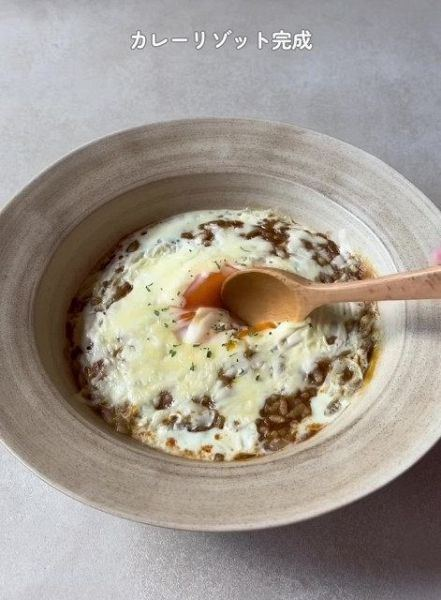
367万回AGARA 紀伊民報 · 09 Nov
Excite エキサイト · 10 Nov
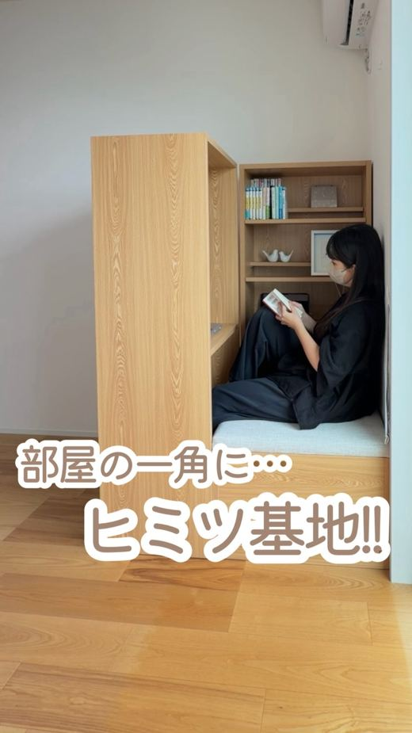
300万回 NEWPR TIMES · 10 Nov · @i_house.8 ♥38,289
 136万回
NEW
136万回
NEW
オリコンニュース · 09 Nov
Excite エキサイト · 09 Nov
ライブドアニュース · 09 Nov
千葉テレビ放送株式会社 · 10 Nov
Excite エキサイト · 10 Nov
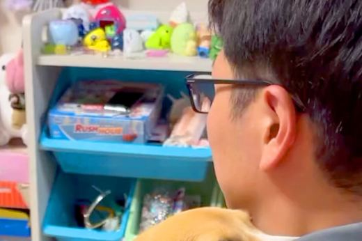
24万回Excite エキサイト · 09 Nov
Excite エキサイト · 10 Nov
Excite エキサイト · 10 Nov
PR TIMES · 10 Nov · @riiinodesu ♥1,485
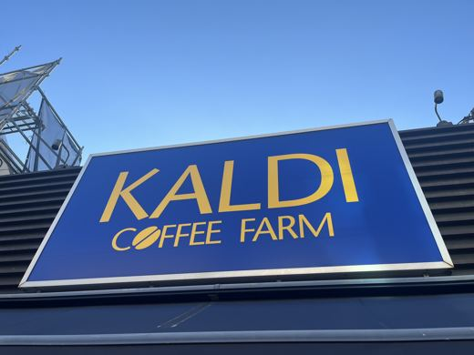
NEWニコニコニュース · 10 Nov
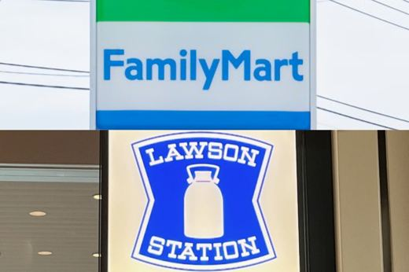
NEWBuzzFeed · 10 Nov
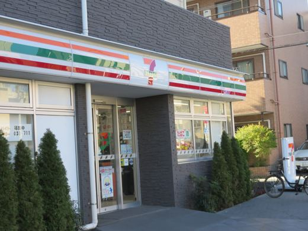
NEWニコニコニュース · 10 Nov
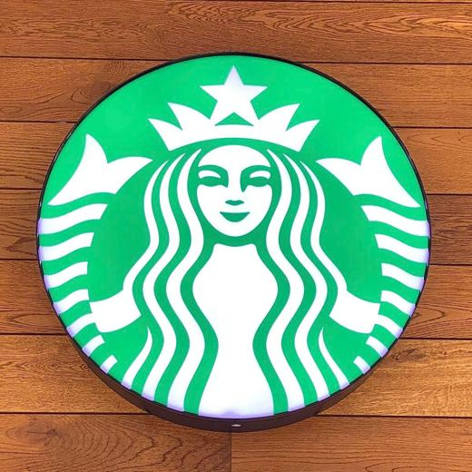
NEWTRILL · 10 Nov
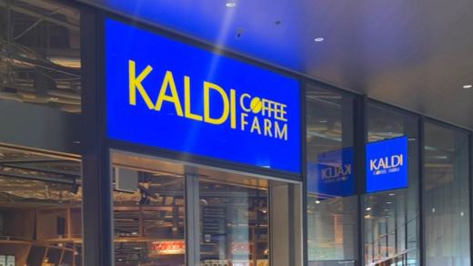
NEWYahoo!ニュース · 10 Nov
ニコニコニュース · 10 Nov
 NEW
NEW
クランクイン！ · 10 Nov
au Webポータル · 10 Nov
オトナンサー · 10 Nov
中日新聞Web · 10 Nov · @hokawakanonn ♥3,073
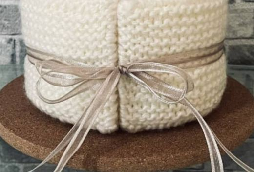
NEWニコニコニュース · 10 Nov
 NEW
NEW
Yahoo!ニュース · 10 Nov
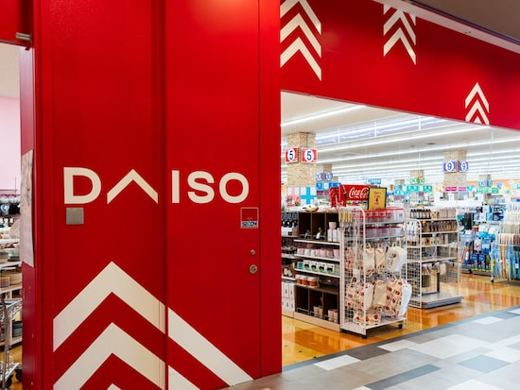
NEWInfoseek · 10 Nov
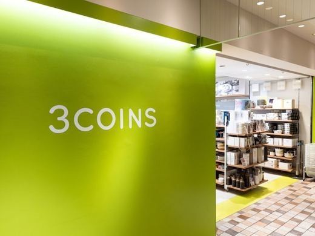
NEWExcite エキサイト · 10 Nov
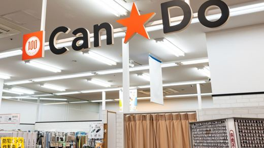
NEWAll About ニュース · 10 Nov
grapee.jp · 10 Nov
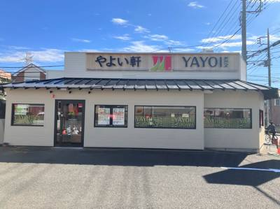
11/10 13:00 🗼 千葉株式会社プレナスのプレスリリース 11.11(水)10時～ 株式会社プレナスは、定食レストラン「やよい軒」を、2026年10月
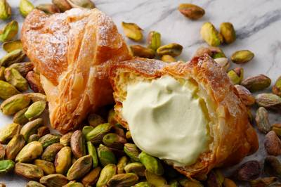
11/10 12:10 🗼 東京株式会社シュクレイのプレスリリース ミルク・チーズ・ピスタチオのコクが絶妙に混ざり合う、冬季限定のミルクパイ。 株式会社シュクレ
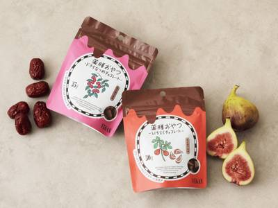
11/10 12:00 🗼 東京株式会社ブラウンシュガー1STのプレスリリース 原材料はたったの4つ。白砂糖・乳化剤フリーのヴィーガンチョコレートで包んだ、心と
森永製菓株式会社のプレスリリース 森永製菓株式会社（東京都港区芝浦、代表取締役社長 COO・森 信也）は、「ダース」ブランドより
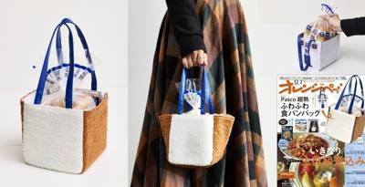
11/10 10:20 🗼 東京株式会社オレンジページのプレスリリース 株式会社オレンジページ（東京都港区）が刊行する創刊41周年の生活情報誌『オレンジページ』
株式会社リクームのプレスリリース 特製クリーム×ポップコーンを混ぜて楽しむ新感覚リッチスイーツ スイーツブランド「なまくり」（運
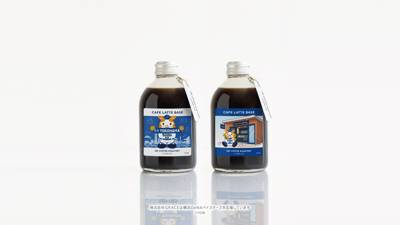
11/10 08:00 🗼 横浜株式会社GRACEのプレスリリース 〜ブランドごとの限定デザイン全2種類。UNI COFFEE ROASTERY BON BON
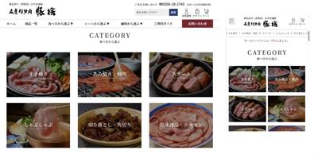
11/11 08:00 🚄 三重有限会社 豚捨のプレスリリース 〜明治42年創業の老舗精肉店が厳選。希少部位や特選ステーキ、ローストビーフ用ブロック肉など、お世
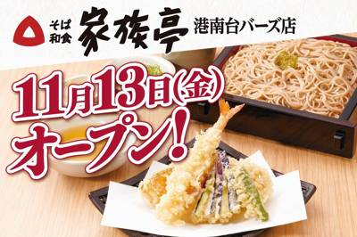
11/11 08:00 ❓ 不明SRSホールディングス株式会社のプレスリリース 創業79年目を迎える家族亭の62店舗目。港南台駅に隣接する「港南台バーズ」へ出店
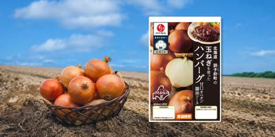
11/10 17:33 🚄 北海道石井食品株式会社のプレスリリース ～全国有数の玉ねぎ産地から、まちづくりの新たな挑戦～ 無添加調理※１で商品づくりを進める石井
株式会社セブン‐イレブン・ジャパンのプレスリリース 〜香川県の「讃岐ラーメン」や高知県の「宗田節ラーメン」など地域限定商品が新登
共栄製茶株式会社のプレスリリース 1836年創業の老舗茶舗「森半」が贈る新感覚ショートドラマ 天保7年（1836年）創業の老舗茶
東和フードサービス株式会社のプレスリリース 日本栄養大学×アトレマルヒロ×ダッキーダックの産学連携により、川越の魅力がつまった新
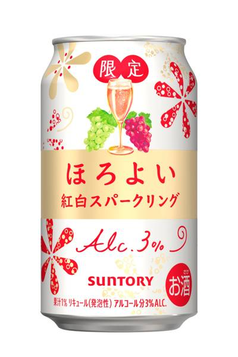
11/10 16:09 🌐 全国サントリーホールディングス株式会社のプレスリリース サントリー（株）は、「ほろよい〈紅白スパークリング〉」を２０２７年１月５日（
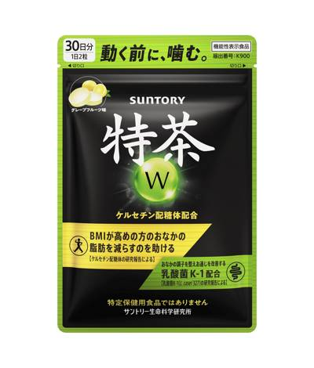
11/10 16:09 ❓ 不明サントリーホールディングス株式会社のプレスリリース ― ＢＭＩが高めの方のおなかの脂肪を減らすのを助け、お通じの改善をサポートす
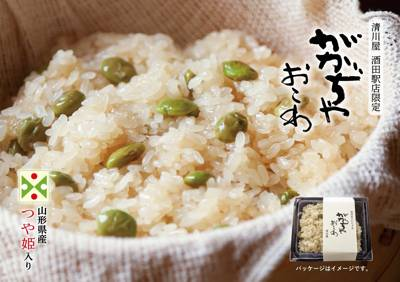
11/10 16:00 🚄 山形株式会社清川屋のプレスリリース 奥田政行「アル・ケッチァーノ」三段重が復活！ 累計60万本「ほわいとぱりろーる」に限定抹茶、山形
シーホース三河株式会社のプレスリリース いつもシーホース三河にご青援ありがとうございます。 11月14日(土)富山戦にて、特別企
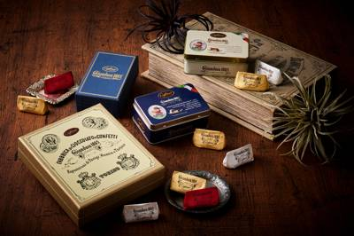
11/10 15:29 ❓ 不明株式会社山本商店のプレスリリース 200周年の歴史を受け継ぎ、未来へと紡ぐ――新たなカファレルのラインナップをご紹介いたします。
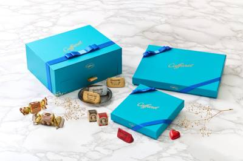
11/10 15:03 ❓ 不明株式会社山本商店のプレスリリース 鮮やかなブルーとゴールドのロゴが心を奪う、特別な贈り物。 2026年11月10日 2026年に
カバヤ食品株式会社のプレスリリース 2026年11月24日（火）より先行発売開始 カバヤ食品株式会社は、ココロときめくキラキラ
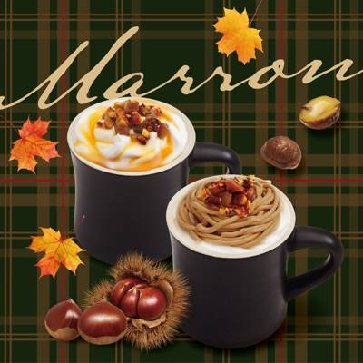
11/10 15:00 ❓ 不明株式会社ピー・エス・コープのプレスリリース 和栗やマロンクリームを贅沢に使用した「和栗のメープルミルクティー」と「モンブランラテ
株式会社木曽路のプレスリリース ～木曽路のたれで楽しむ新商品2品。忘年会には黒毛和牛を味わうコースも～ 株式会社木曽路（本社：愛
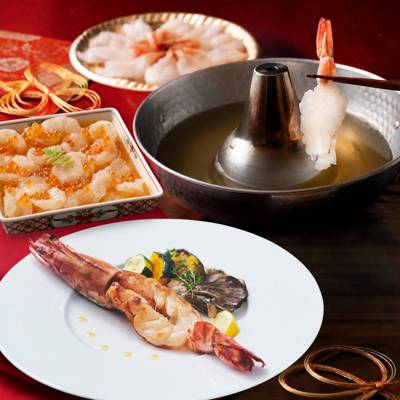
11/10 14:21 ❓ 不明FGROW JAPAN株式会社のプレスリリース 海老しゃぶしゃぶや紅白漬など人気商品を詰め合わせた数量限定2種｜11/10〜12
カンロ株式会社のプレスリリース ～甘さの中にほんのり酸味が広がる「ふかふかいちごわたあめ味」～ カンロ飴やピュレグミなどでおな
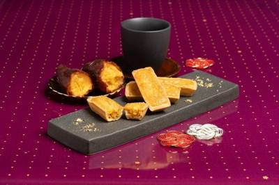
11/10 14:00 🚄 金沢西日本旅客鉄道株式会社のプレスリリース 『株式会社あいの風（本社：富山県富山市黒崎303番地1、代表取締役社長：小玉 直樹）』
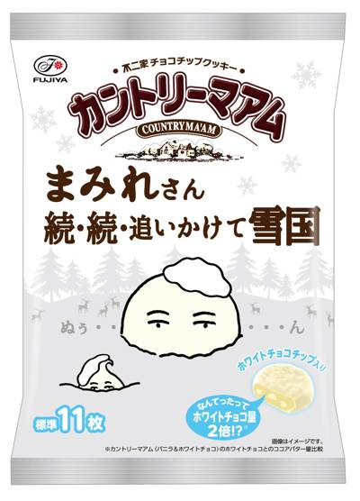
11/10 14:00 🌐 全国株式会社不二家のプレスリリース 2026年11月17日（火）全国発売 ■真っ白なチョコ掛けの冬季限定チョコまみれが、さらに雪まみ
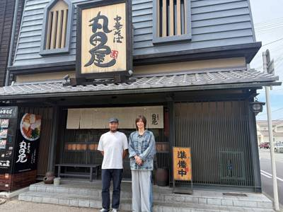
11/10 14:00 🚄 和歌山株式会社NANKAIのプレスリリース 通販でもヘビロテする「中華そば 丸田屋」 和歌山県に聖地巡礼したnote記事を公開 「中華
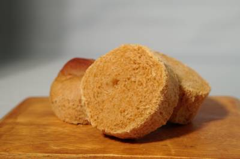
11/10 13:24 🚄 愛知株式会社アートジャパンナガヤ設計のプレスリリース 八丁味噌の濃厚なコクと、しっとり甘じょっぱいパンの絶妙な組み合わせ。日本の伝統
株式会社井筒八ッ橋本舗のプレスリリース 江戸時代の名妓「夕霧太夫」を偲ぶ、秋の伝統行事。華やかな太夫道中や舞を通じて、京都・嵯峨
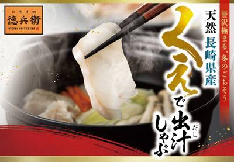
11/10 13:00 🚄 長崎株式会社アトムのプレスリリース コロワイドグループの株式会社アトム（本社：神奈川県横浜市 代表取締役社長：植田剛史）が展開する回
ほっともっとのプレスリリース 株式会社プレナスは、持ち帰り弁当の「Hotto Motto (ほっともっと)」を、2026年10月
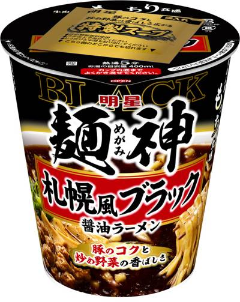
11/10 13:00 ❓ 不明明星食品株式会社のプレスリリース ブラックフライデーに、背徳感のある濃くて旨い、そして “黒い” 麺神カップが登場 「明星 麺神
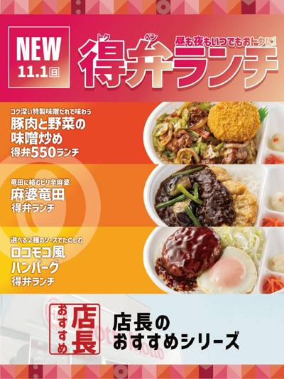
11/10 13:00 🌐 全国株式会社プレナスのプレスリリース 株式会社プレナスは、持ち帰り弁当の「Hotto Motto (ほっともっと)」を、2026年1
株式会社ブロードエッジ・アドバイザーズのプレスリリース ショコラティエがつくるパティスリー【デリーモ】から、チョコレートの魅力を
株式会社レインズインターナショナルのプレスリリース 【期間限定】2026年11月16日(月)～2027年1月11日(月・祝)
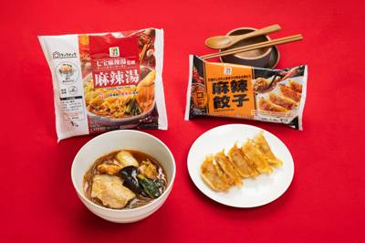
11/10 11:30 🌐 全国株式会社セブン‐イレブン・ジャパンのプレスリリース 〜麻辣湯はブンモジャやハナビラダケなど具材を追加しリニューアル～ 株式会社
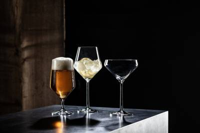
11/10 11:30 ❓ 不明株式会社ツヴィーゼル・フォルテッサ・ジャパンのプレスリリース 株式会社ツヴィーゼル・フォルテッサ・ジャパン（本社：東京都港区芝／
株式会社おやつカンパニーのプレスリリース 北海道限定のプレミアムなブタメン＜さっぽろ味噌ラーメン味＞ 株式会社おやつカンパニー(
株式会社サンマルクカフェのプレスリリース オープンを記念したお得なスペシャルセットも数量限定で発売 株式会社サンマルクカフェ（
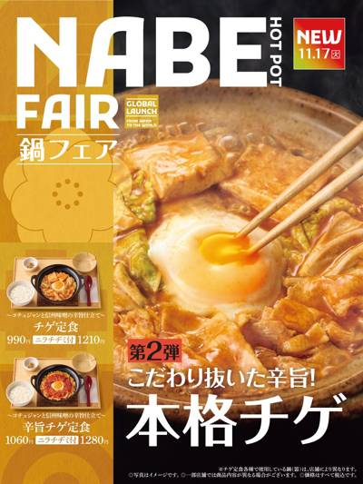
11/10 11:00 ❓ 不明株式会社プレナスのプレスリリース 11.17(火)より新発売 株式会社プレナスは、定食レストラン「やよい軒」を、日本国内にて1
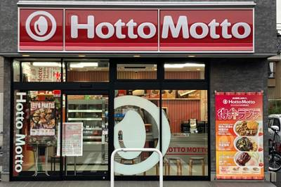
11/10 11:00 🚄 金沢株式会社プレナスのプレスリリース 株式会社プレナスは、持ち帰り弁当の「Hotto Motto(ほっともっと)」を、2026年10
ほっともっとのプレスリリース 株式会社プレナスは、持ち帰り弁当の「Hotto Motto(ほっともっと)」を、2026年10月末
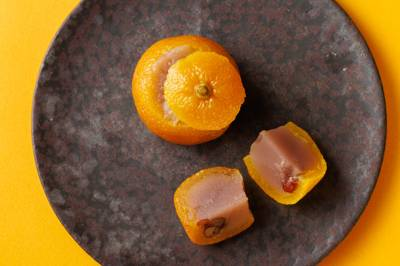
11/10 11:00 🚄 島根株式会社 彩雲堂のプレスリリース 1991年に誕生した「柚衣」。蜜漬けした柚子を器に、朝汐餡と吉野葛を合わせた羊羹を詰めた、柚子
キリンホールディングス株式会社のプレスリリース キリンホールディングス株式会社（社長 COO 南方健志）が展開する、キリンサプリ
株式会社セブン‐イレブン・ジャパンのプレスリリース ～11月13日（金）より全国のセブン‐イレブンで順次展開～ 株式会社セブン
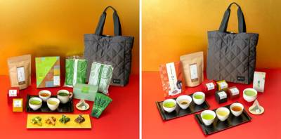
11/10 11:00 🚄 京都株式会社祇園辻利のプレスリリース 〜冬のお出かけに寄り添う、オリジナルの「キルティングトートバッグ」付き〜 1860年創業、京都
株式会社さかなし薬局のプレスリリース 天膳茶を詰め合わせて、大切な人への贈り物に。年末年始のご挨拶や内祝いなど、さまざまなギフト
イオン株式会社のプレスリリース 家族みんなで同じごはんがおいしく食べられますように。 イオンは１１月１０日より順次、「イオン」
株式会社セブン‐イレブン・ジャパンのプレスリリース 〜今しか味わえない、冬の贅沢アイス2種〜 株式会社セブン‐イレブン・ジャパ
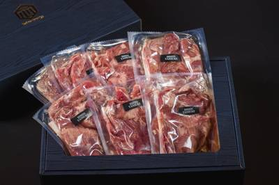
11/10 10:30 🌐 全国株式会社Globridgeのプレスリリース 〜11月10日（火）販売開始 当店の180g商品と比べて100gあたりの価格は半額以
イオン株式会社のプレスリリース プロの料理人のご意見をもとに、衣を軽く、クリームとのバランスを見直し。鳥取県境港産紅ずわいがにを
イオン株式会社のプレスリリース この冬の「食べたい」を、叶える。トップバリュでごちそうがもっと自由に。若どり味付ローストチキン用
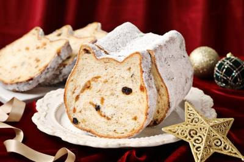
11/10 10:20 🌐 全国株式会社オールハーツ・カンパニーのプレスリリース ～全国の「ねこねこ食パン」取り扱い店舗にて2026年12月1日（火）より発売開
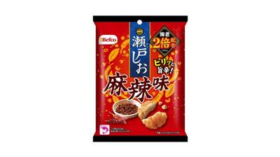
11/10 10:10 ❓ 不明株式会社栗山米菓のプレスリリース ～通常品の約2倍のえびを使用、サクッと軽やかな食感と後を引く“旨辛”が楽しめる～ “ばかうけ”
株式会社モスフードサービスのプレスリリース ～大人向けのコーヒーシェイクやハンバーガーに見立てたマカロンスイーツも同時発売～ モ
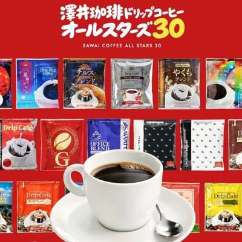
11/10 10:10 ❓ 不明株式会社澤井珈琲のプレスリリース 30種類を飲み比べ。11月15日発売の新商品を、発売前の今なら予約特典付きで販売 株式会社澤井
ディアジオ ジャパン株式会社のプレスリリース パリを拠点に活躍するジアイ・リー氏とのコラボレーション。輝く太陽に向かって雲を抜け
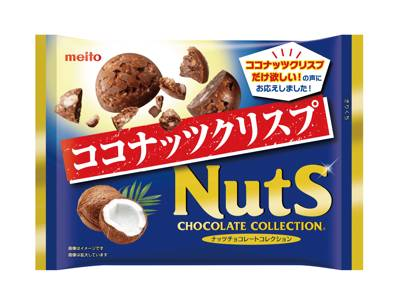
11/10 10:00 ❓ 不明株式会社meitoのプレスリリース 株式会社meito（本社：愛知県名古屋市、代表取締役社長：三矢益夫）は、この度、「ココナッツ
株式会社ガーデンのプレスリリース さらに‼壱角家アプリ新規入会は大チャンス＆トッピング無料クーポン付きのW特典&#
株式会社HONZANのプレスリリース 〜がんばる前に発酵の恵みを。〜佐賀県の産官学連携から生まれたブランド「レッドサーガ」の第二
株式会社 帝国ホテルのプレスリリース 帝国ホテルのオンラインモール「ANoTHER IMPERIAL HOTEL」 クリスマスの
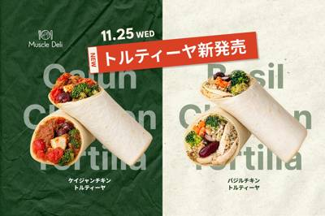
11/10 10:00 ❓ 不明株式会社YOUR MEALのプレスリリース 〜創業10周年記念！マッスルデリユーザー向けに11月13日より先行販売＆応募者全員プ
Ｆ＆Ｐジャパン株式会社のプレスリリース 「スムージーは冷たいもの」という常識を超え、カゴメとＦ＆Ｐが冬のホットスムージーの魅力を
株式会社波里のプレスリリース 原料開発から商品化・販売までの一貫体制を構築し、VCON事業のさらなる成長へ 株式会社波里、クリー
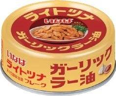
11/10 10:00 ❓ 不明いなば食品株式会社のプレスリリース ご飯にかけるだけ、パスタに和えるだけで本格的な一品に。きはだまぐろを100％使用した、ひと味
The Time of Asia株式会社のプレスリリース アジアの植物と日本のものづくりを融合。料理とのペアリングを追求する高級
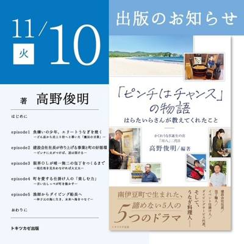
11/10 09:30 🚄 静岡株式会社川八のプレスリリース 〜 命日にあたる11月10日にAmazon Kindle先行販売、12月24日にはペーパーバック版
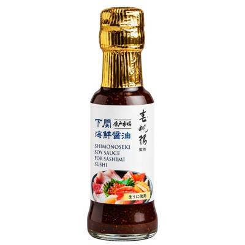
11/10 09:00 ❓ 不明地域商社やまぐち株式会社のプレスリリース 地域商社やまぐち株式会社（代表取締役：林 誠二）は、下関の老舗割烹・春帆楼が監修し、下
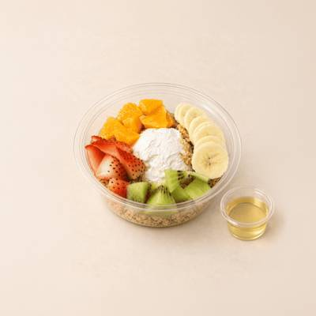
11/10 18:00 🚄 大阪YOGMONのプレスリリース 牧場から採れた生乳由来の原料だけを使用した、砂糖不使用、 添加物なしの「もったり濃厚」なグリークヨ
株式会社ワルツのプレスリリース 11月中旬からワインバル、ビストロ、ピッツェリアなどマルゴグループ各店で開催。マルゴ四谷の『安比
那須千本松牧場のプレスリリース ～那須千本松牧場×宇都宮文星女子高校～ ホウライ株式会社（本社：東京都中央区、代表取締役社長兼社
株式会社ホットランドホールディングスのプレスリリース ＜ オープン記念！お得な4日間限定＞ レモンサワー・タコハイ・宝極上酎ハイ
YT株式会社のプレスリリース 昨年大好評の名物「痛風鍋」が豪華に進化！大粒牡蠣・真鱈の白子・国産あん肝・赤海老が織りなす、冬のご
株式会社モンテローザのプレスリリース 11月11日（水）・12日（木）は店内飲食のメニューが全品半額！11月13日（金）は料理ま
マルマン株式会社のプレスリリース マルマン株式会社と株式会社富澤商店は、クリスマスシーズンにあわせた共同キャンペーン「描いて！作
株式会社ウイッシュボンのプレスリリース 国内最高峰のプロバスケリーグ「B.PREMIER」・横浜BUNTAIで繰り広げられる迫力
株式会社焼肉坂井ホールディングスのプレスリリース ～ 11（いい）月14（いし）日・記念日キャンペーン～ 韓メシ・韓スイーツ「ア
くら寿司株式会社のプレスリリース 脂が乗った冬の味覚をお届け！ 「ぶりととろ」フェア QRクーポンで“寒ぶり”が一皿無料に！ ―
コープデリ生活協同組合連合会のプレスリリース 家庭に眠るはがきや切手で、国内外の子どもたちを支援 生活協同組合コープみらい（本
株式会社物語コーポレーションのプレスリリース 物語コーポレーション(本社:愛知県豊橋市/代表取締役社長:加藤 央之)が全国121
 11/10 13:00
🚄 神戸
11/10 13:00
🚄 神戸
電解質ドリンク「Precision Fuel & Hydration（プレシジョンフューエル&ハイドレーション）
ヤマキ株式会社のプレスリリース ～我が家の定番も、意外な組み合わせも！みんなで見つける、かつお節の新たな魅力～ ヤマキ株式会社（
株式会社コシダカのプレスリリース 全国のまねきねこで2日間限定「室料0円」！47種のご当地ドリンクや選べる宿泊プレゼント登場！
株式会社富澤商店のプレスリリース クリスマスに向けて、ヘクセンハウスを“作る楽しさ”と“描く楽しさ”で楽しむ参加型企画 創業10
株式会社Luupのプレスリリース LUUP新規登録で、抽選で500名に2,000円分のお得なロケットナウクーポンプレゼント、「ロ
カタギ食品株式会社のプレスリリース 総勢800名にQUOカードPayや公式キャラクターグッズが当たる！カタギ食品のごまを買ってポ
CP One Japan合同会社のプレスリリース ～冬の「移動」と「ごはん」をもっと便利に！お得なクーポンやオリジナルグッズが当
全国農業協同組合連合会のプレスリリース ＪＡ全農が運営する産地直送通販サイトＪＡタウンは、１１月１０日（火）に「魚の日限定セー
JA全農の産直通販JAタウンのプレスリリース ＪＡ全農が運営する産地直送通販サイトＪＡタウンは、１１月１０日（火）に「魚の日限
SRSホールディングス株式会社のプレスリリース 対象食べ放題コースが税抜310円引きの特別価格に。大切な方との団らんのひとときを
株式会社サガミホールディングスのプレスリリース ～旨味をぎゅっと閉じ込めた「蒸し牡蠣」と自慢の手延べうどんが織りなす、冬の贅沢な
株式会社さすがやのプレスリリース ～金・プラチナ 店頭買取価格相場から最大30％アップ～ 買取専門店を全国に展開する株式会社さ
三ヶ日町農業協同組合のプレスリリース 店頭の目印は「ミカちゃん」 日本最大規模の柑橘選果場で選別 静岡県浜松市浜名区三ヶ日町で、
カルビーかいつかスイートポテト株式会社のプレスリリース カルビーかいつかスイートポテト株式会社は、11月13日の「いい焼き芋の日
株式会社NTTドコモのプレスリリース 冬の白いモスバーガー、ダブル冬の白いモスバーガー、モスの匠味 黒毛和牛ダブルバーガー ～大
株式会社 FS.shakeのプレスリリース 株式会社FS.shake（本社：東京都豊島区）は、2026年11月10日（火）より、
株式会社銀座おのでらのプレスリリース 株式会社銀座おのでら（代表取締役社長：木村 吉孝 所在地：東京都千代田区）は、2026年1
コーヒースタイルユーシーシー株式会社のプレスリリース 最大2万円以上お得！150杯分・17種類を詰め合わせたプレミアム福袋も登場
Trailhead Global Holdings株式会社のプレスリリース 「KINTAN」厳選の牛ブイヨンと「ROTISSER
株式会社コロナワールドのプレスリリース 株式会社コロナワールド（本社：愛知県小牧市、代表取締役社長：室橋 義隆）が運営する複合ア
株式会社ORBのプレスリリース 株式会社ORB（本社：東京都港区、代表取締役：中山誠）が運営する「ORBcafe」にて、『楽園追
株式会社TNT MARKETのプレスリリース 12月1日グランドオープン 場所：大阪市北区梅田3-1-1 大丸梅田店 地下１階
株式会社フォーシーズのプレスリリース 【期間限定】2026年11月12日（木）～12月27日（日） 株式会社フォーシーズ（本社
株式会社JR西日本ホテルズのプレスリリース ホテル帰省におすすめの「ディナービュッフェ付き宿泊プラン」も販売 新春ビュッフェ20
株式会社アンドエスティHDのプレスリリース 〜半年間の本格的な実践型共創プロジェクト。美容や健康を気遣う女性たちの“心とカラダの
株式会社フードコネクションのプレスリリース 厨房設備完備。ランチ出店からディナーコラボ、アンケート集計&レポートまでサポ
株式会社お亀堂のプレスリリース 鬼まんじゅう・塩豆大福は1個、みたらし団子は2本増量。あん巻きの皮や自家製つぶ餡の特別販売に、創
株式会社Mr.Weihnachtsmannのプレスリリース 博多駅前に限定マグカップやヨーロッパ雑貨や冬グルメ、幻想的なイルミネ
株式会社信濃屋食品のプレスリリース クリスマスからお正月まで、食卓を彩る全16商品。信濃屋が選び抜いた『2026年 信濃屋のごち
株式会社Studio MOROのプレスリリース 食材や土地、季節、器、音楽、そして人。すべての“Tessera/ 断片”を重ねて
マリオット・インターナショナルのプレスリリース 心弾む苺スイーツと華やかな彩りのセイボリー、春の訪れを彩る2種類のアフタヌーンテ
株式会社BOND TOKYOのプレスリリース 株式会社ＢＯＮＤＴＯＫＹＯ（代表：藤井 亮太）は、大阪・北新地『トリュフ蕎麦わたな
株式会社ICONIC LOCATIONS JAPANのプレスリリース 株式会社ICONIC LOCATIONS JAPAN(代表
三菱地所ホテルズ＆リゾーツ株式会社のプレスリリース 3種の国産肉と冬の恵みが彩る饗宴で、贅沢なひとときを。 ザ ロイヤルパーク
株式会社三井不動産ホテルマネジメントのプレスリリース 【三井ガーデンホテル銀座プレミア】2026年11月11日(水)から提供開始
株式会社カカクコムのプレスリリース 食べログユーザーから高い評価を集めた焼き鳥の名店TOP100 – 初選出店は「E
株式会社ALL GRACEのプレスリリース 時間無制限飲み放題1,892円(税込)〜［最大360分飲み放題］好きなだけ飲める！さ
株式会社RE CHEESEのプレスリリース “時を生きるクッキー”「余韻」など全商品ラインナップを発表 株式会社RE CHEES
明治記念館のプレスリリース 鮨・天麩羅・鉄板焼「羽衣」では、旬の味覚を彩り豊かに詰め込んだテイクアウト限定「銀杏弁当（3,780
株式会社バディネットのプレスリリース 〜人通りが多く複雑な都市部環境において、重大事故ゼロ・総稼働時間312時間を達成〜 株式会
AMI Paris Japan株式会社のプレスリリース Photo by: Kyoko Munakata Ami Paris（ア
株式会社ケイシイシイのプレスリリース この季節だけの贅沢な秋の実りを、頑張った自分へのご褒美に、大切な方へ笑顔を届けるお土産に、
株式会社Gabのプレスリリース 注いで、ねかせる。いつものお酒を楽しむキットを、店頭でも手に取ってお選びいただけるようになりまし
明治記念館のプレスリリース 鮨・天麩羅・鉄板焼「羽衣」では、令和8年11月1日(日)より12月4日(金)まで、旬の味覚を取り入れ
株式会社マッシュホールディングスのプレスリリース 冬のひとときをロマンティックに彩るカフェモカやミルクティー、ベリーソーダなど特
株式会社DREAM ONのプレスリリース ～高級卵「マキシマム」で作る極上のトロトロオムライス～ 株式会社DREAM ON(本社
株式会社サンダーバードのプレスリリース 仙台の冬の名物「せり鍋」を、恵比寿の囲炉裏空間で。『ファイヤーバード』が秋田・三関の“根
朝霧乳業株式会社のプレスリリース 2026年11⽉18⽇(水)〜11月24⽇(火)／東武百貨店 池袋本店8階催事場『第18回 I
ヒューリックホテルマネジメント株式会社のプレスリリース ライブキッチンでは、出来たてのフレンチトーストにアイスクリームを添えてご
株式会社GENDA GiGO Entertainmentのプレスリリース 2026年11月13日(金)よりオープン！ 株式会社G
株式会社グレートベアーズのプレスリリース 株式会社グレートベアーズ（本社:東京都渋谷区、代表取締役：久保田健司）は、株式会社フォ
～油付きプラボトルと廃食油の回収・再資源化を通じ、 資源循環の仕組みづくりを推進～ 三井化学株式会社(本社：東京都中央区、代表取
株式会社GENDA GiGO Entertainmentのプレスリリース 2026年11月13日(金)よりオープン！ 株式会社G
マリオット・インターナショナルのプレスリリース 甘酸っぱいいちごと濃厚なリンツチョコレートが織りなす、期間限定のティータイム 新
森永乳業株式会社のプレスリリース サステナビリティ中長期計画2030、「資源と環境」テーマへの取り組み 森永乳業株式会社（代表
株式会社ウィッチクラフトのプレスリリース 表参道店 永田町店の両店で2026年11月11日(水)より販売 ピスタチオの扱いから生
和食と和酒 磯じまんのプレスリリース のどぐろ・鱈の白子・天然クエ・とらふぐ・香箱ガニに、天然ぶりのしゃぶしゃぶも 完全個室での
株式会社帝国データバンクのプレスリリース 「カレーライス物価指数（2026年基準改定）」調査 ―2026年9月 株式会社帝国デー
美デンタルクリニックのプレスリリース 歯ぐき下がり・歯の隙間の見た目の悩みに対応する 着脱式人工歯肉カバーの特許を取得しました
アークランドサービスホールディングス株式会社のプレスリリース 粗挽き鴨肉と赤ワインの旨味・コクが広がるこだわりパスタ＆かぼちゃの
J2B株式会社のプレスリリース 「K-FOOD 企業 日本IP保護セミナー」開催 ── ハイブリッド形式で実施、約100名が参加
全国農業協同組合連合会のプレスリリース 中畑清氏や村田真一氏ら元プロ野球選手が茅野市で熱血野球指導！！ ＪＡ全農WCBF少年野球
株式会社東洋のプレスリリース 株式会社東洋が2027年1月末までの期間限定で広報体制を強化 株式会社東洋（本社：埼玉県桶川市、代
サントリーホールディングス株式会社のプレスリリース サントリー名誉チーフブレンダー輿水 精一(こしみず せいいち)氏は、この度、
有限会社五島養魚場のプレスリリース 家庭向けの訳あり蒲焼を3サイズで展開。Amazon出店記念として11月22日まで対象3商品が
株式会社ぐるなびのプレスリリース ～ 食文化分野において優れた功績を挙げた方を顕彰 ～ 株式会社ぐるなび（本社：東京都千代田区、
学校法人大阪観光大学のプレスリリース 学校法人大阪観光大学（所在地：大阪府泉南郡熊取町、理事長：山本健慈、学長：山田良治）は、一
伊藤園新俳句大賞事務局のプレスリリース 株式会社伊藤園（社長：本庄大介 本社：東京都渋谷区）が主催する「第三十七回 伊藤園お～
株式会社ジョイフルのプレスリリース ファミリーレストランチェーン「ジョイフル」を展開する株式会社ジョイフル（本社：大分県大分市
ベースフード株式会社のプレスリリース 完全栄養※1の主食等を開発・販売するベースフード株式会社（本社：東京都港区、代表取締役：橋
株式会社リロバケーションズのプレスリリース 駄菓子バーや夜パフェなど、懐かしさと新しさが交わる温泉ホテルへ “想いをつむぎ、新し
株式会社おぎそのプレスリリース 美濃焼の伝統技術と高純度アルミナを融合。 耐久性と美しさ、実用性を兼ね備えた高強度磁器 株式会社
カゴメ株式会社のプレスリリース 国内外の研究結果を統合して、血管のしなやかさを示す指標を検証 カゴメ株式会社（代表取締役社長：奥
株式会社MS&Consultingのプレスリリース 値上げ後も選ばれる条件、1位は「料理の味・品質」81.8％ 国内最大
株式会社アップライジングのプレスリリース 山崎25年・山崎18年を各1口、山崎12年を5口封入！全7銘柄からウイスキー1本をお届
ＪＲ北海道フレッシュキヨスク株式会社のプレスリリース ＪＲ北海道フレッシュキヨスク株式会社（代表取締役社長：戸川達雄）の運営す
株式会社SAKIGAKEホールディングスのプレスリリース 「海老名店」のリニューアルオープンを記念し、すべてのラーメンを100円
東急ホテルズ＆リゾーツ株式会社のプレスリリース ～料理長 角房直記が手掛ける、京都の季節の味覚と華やかな演出が織りなす聖夜のフル
月島もんじゃ振興会協同組合のプレスリリース ～AI多言語案内・オンライン予約・外国人旅行者向けTokyo Monja Dinin
カッパ・クリエイト株式会社のプレスリリース 期間限定！2026年11月12日（木）より、かっぱ寿司全店で販売開始 コロワイドグ
株式会社ポジティブドリームパーソンズのプレスリリース 2026年12月1日（火）～2月28日（日）の期間限定で販売 全国でホス
株式会社 小田急レストランシステムのプレスリリース 株式会社小田急レストランシステム（本社：東京都渋谷区 代表取締役社長：深海
株式会社ポジティブドリームパーソンズのプレスリリース 2026年12月1日（火）～2月28日（日）の期間限定で販売 全国でホス
Ｇｉｎｇｅｒ Ｌａｂ株式会社のプレスリリース 社会貢献型防災備蓄食「KIBOU CURRY」と防災備蓄管理SaaS「KIBOU
株式会社 伝食のプレスリリース 海産物を中心とした通信販売・店頭販売・飲食・水産加工事業を手掛ける株式会社伝食（本社：福井県敦賀
株式会社FOOD & LIFE COMPANIESのプレスリリース ＜11月11日（水）より全国のスシローにて販売開始＞
株式会社KISSUI GROUPのプレスリリース 福島県伊達の明産物をデザインテーマに盛り込んだ「月島もんじゃ こてつ」が東北に
株式会社飯田商店のプレスリリース ふるさと納税で主に市外へ届く銚子の水産加工品を、地元の子どもたちの給食にも 株式会社飯田商店（
マリオット・インターナショナルのプレスリリース ～地域ならではの料理が食事先選びの決め手に。食事の場は従来のレストランから、より
株式会社ゼンショーホールディングスのプレスリリース 株式会社バーガー・ワン（代表取締役社長：木村 大志 本社：東京都港区）が展開
東急ホテルズ＆リゾーツ株式会社のプレスリリース ランチ5,800円／ディナー 9,800円。12月24日・25日のディナーは炎の
東急ホテルズ＆リゾーツ株式会社のプレスリリース 2026年12月5日（土）・6日（日） 2日間開催 詳細を見る 松江エクセルホテ
株式会社オニオン新聞社のプレスリリース 株式会社オニオン新聞社と小川畜産グループの小川フード＆サービス株式会社による共同プロジェ
株式会社長寿荘のプレスリリース 常陸牛や奥久慈軍鶏、海の幸を贅沢に味わう2種類のクリスマス限定コース 『ホテルテラスザガーデン水
GHS箱根株式会社のプレスリリース 薪火フレンチと和の感性が織りなす冬の美食体験。 総料理長・坂本啓が、地元食材と自身の経験を重
株式会社コシダカのプレスリリース 〜「エンタメをインフラに」を実現。日本の隅々まで変わらぬ感動と笑顔をお届けします〜 全国でカラ
 11/10 12:01
🚄 大宮
11/10 12:01
🚄 大宮
株式会社ケイシイシイのプレスリリース この季節だけの贅沢な秋の実りを、頑張った自分へのご褒美に、大切な方へ笑顔を届けるお土産に、
東和フードサービス株式会社のプレスリリース 美味しさの秘訣は“白餡”！絶妙な「和洋折衷」のハーモニー。 「椿屋珈琲」などを展開す
株式会社UN-BEのプレスリリース 株式会社UN-BE(本社:東京都台東区、代表取締役: 村田洋祐)は、お弁当ブランド「BEN(
東和フードサービス株式会社のプレスリリース パンダ、イタリアに憧れる！？人気のパンダシュークリームに新フレーバーが登場！ 東和フ
株式会社イミューのプレスリリース 株式会社イミュー（本社：東京都品川区、代表取締役：黒田康平）の子会社で、北海道白糠町にて水産業
株式会社エムアイフードスタイルのプレスリリース 11月11日（水）～11月15日（日）開催 三越伊勢丹のグループ会社で、首都圏
東和フードサービス株式会社のプレスリリース 「秋王」と紅茶が奏でる、パティシエ手づくりの極上タルト 「椿屋珈琲」などを展開する東
 11/10 11:59
🚄 大宮
11/10 11:59
🚄 大宮
株式会社ケイシイシイのプレスリリース チーズスイーツ専門店「Now on Cheese♪（ナウ オン チーズ）」（株式会社ケイ
株式会社ロイヤリティマーケティングのプレスリリース 全58店舗でPontaポイントがたまる・つかえる！ 共通ポイントサービス「
渡辺パイプ株式会社のプレスリリース ～八街農場直売所では「トマトバイキング」も実施中～ 建設資材・農業資材の専門商社である渡辺パ
株式会社ポトマックのプレスリリース 毎年大人気の大きなカキフライ。タルタル＆リーペリンのダブルソースで召し上がれ。 神戸・三宮「
株式会社柿安本店のプレスリリース お得な早期予約割引の受付期間は2026年12月6日（日）まで 明治4年（1871年）牛鍋店とし
株式会社赤ちゃん本舗のプレスリリース 子どもが日常の出来事をまねしたり、身近なものを別の何かに見立てたりする「ごっこ遊び」。子ど
カッパ・クリエイト株式会社のプレスリリース 2026年11月12日（木）～11月25日（水）（予定）、かっぱ寿司全店にて販売
モロゾフ株式会社のプレスリリース 2026年11月18日（水）キャラメリオン 阪神梅田本店オープン モロゾフ株式会社（神戸市東灘
株式会社ゴンチャ ジャパンのプレスリリース 株式会社ゴンチャ ジャパン（本社：東京都港区、代表取締役社長：角田 淳、以下ゴンチ
株式会社TOAIのプレスリリース 全国213店舗を展開し、西日本においてカラオケ業界最大級を誇るジャンカラは、2026年11月1
株式会社さとふるのプレスリリース ～クラウドファンディング型ふるさと納税を活用し、5,000,000円を目標に寄付を募集～ 宮崎
日本ホテル株式会社のプレスリリース ホテルメトロポリタン（豊島区西池袋1-6-1 総支配人 桃谷健志）ケーキ＆ベーカリーショップ
株式会社セトラスフードテックのプレスリリース 世界57か国から選ばれた優良オリーブオイル生産者として掲載 香川県仲多度郡多度津町
株式会社 資生堂パーラーのプレスリリース 公式サイト：https://parlour.shiseido.co.jp/ 資生堂パー
ロイヤルホールディングス株式会社のプレスリリース ～11月12日（木）より予約受付開始～ ロイヤルグループが展開する「てんや」
株式会社BAKEのプレスリリース 今年は公式オンラインショップ「BAKE the ONLINE」限定セットも登場 株式会社 B
株式会社オーイズミフーズのプレスリリース 2026年11月16日（月）～ 2026年12月22日（火） ニューヨーク発の名門
合同会社Kurasuのプレスリリース 「April Brewer」で淹れた一杯を基準に、刃の形状から検証した「April Han
株式会社ゼンショーホールディングスのプレスリリース 株式会社トロナジャパン（代表取締役社長：大澤 剛 本社：東京都港区）は、2
リゾートトラスト株式会社のプレスリリース 2026年11月19日（木）より開始
株式会社ウインズジャパンホールディングスのプレスリリース 「Everyday Ramen」をコンセプトに、89バーツから本格的な
アステナホールディングス株式会社のプレスリリース イワキ株式会社（本社：東京都中央区、代表取締役社長：門倉 稔）は、2026年1
縣商会株式会社のプレスリリース 11月23日、静岡県磐田市で朝6時から14時まで開催。スーツ・作業服着用者限定、中華そば・支那そ
株式会社Yachtのプレスリリース 東西のお雑煮文化から着想した醤油と味噌の2味。SUSURUが試作を重ねた、年越しに楽しむ一杯
ホクト株式会社のプレスリリース ―研究と日々の食卓をつなぐ— ホクト株式会社（本社：長野県長野市、代表取締役：水野雅義）は、健康
韮崎市のプレスリリース 『コシヒカリ』『にじのきらめき』『ゆうだい21』ふるさと納税で受付中！ 実りの季節を迎えた田んぼには、稲
株式会社SAKIGAKEホールディングスのプレスリリース 「神戸森友店」のオープンを記念し、京都背脂醤油ラーメンを特別価格にてご
株式会社サガミホールディングスのプレスリリース ～さらに、期間中にご来店のお客様へ「トッピング無料クーポン」もプレゼント！～ 2
株式会社OMOIのプレスリリース お歳暮冬ギフトもできるようにお取り寄せも開始 株式会社OMOI（代表取締役 川村 諒志）は、鳥
マミヤ・オーピー株式会社のプレスリリース マミヤ・オーピー株式会社(本社:東証スタンダード 7991、本社:東京都新宿区、代表取
エステールホールディングス株式会社のプレスリリース 石川のとり野菜みそ、山梨のほうとう、秋田のきりたんぽなど、冬の食卓を彩るこだ
株式会社ニッカネのプレスリリース 地域を走る約300台の配送網を生かし、企業認知とドライバー採用につなげる 業務用食品専門の総合
有限会社ナチュラルスマイルのプレスリリース サーモンクリーム バジルトマト 石焼きカルボナーラの人気3品を例に紹介うま辛薬味フェ
ユーアールエー株式会社のプレスリリース [北海道・十勝産のエリモ小豆を使用した善哉（商品名：善哉「よきかな」）] –
株式会社ケイシイシイのプレスリリース 仕事終わりのほっと一息つく時間や、休日に家族・友人と囲むカフェタイム。そんな日々の暮らしに
株式会社 エーデルワイスのプレスリリース 新しい“にっぽんの洋菓⼦”をコンセプトに、春夏秋冬、折々の四季菓⼦をお届けしている、四
株式会社TO SURPASSのプレスリリース 40年以上続く老舗お好み焼き店から生まれた新ブランド。もっと自由に、もっと気軽に楽
株式会社TechScholarのプレスリリース 一杯と一篇で、日常に句読点を。11月9日時点で達成率685％、11月29日まで応
天満紙器株式会社のプレスリリース 20か国超への販売実績を基盤に、独自の紙容器成形技術と竹素材100％の食品容器を世界のバイヤー
 11/10 08:50
🚄 沖縄
11/10 08:50
🚄 沖縄
NTカンパニー株式会社のプレスリリース 2027年2月の稼働を予定し、医療・福祉施設への安定供給体制を強化。あわせて、選べる8つ
 11/10 08:00
🚄 浦和
11/10 08:00
🚄 浦和
SRSホールディングス株式会社のプレスリリース 「ジューシームネからあげオリジナルカップ」をオープンから3日間限定販売！ からあ
ChatGPTやGemini、Copilotといった生成AIは、レストランの口コミやグルメブログ、メニューの紹介文にも広く使われ
株式会社ロイヤルマイルのプレスリリース 葉巻初心者から愛好家まで大歓迎！シガー（葉巻）と相性の良いカクテルやウイスキーを片手に、
A. Loacker AG/Spaのプレスリリース ロアカーが生まれたアルプスをイメージした芝生空間が原宿に！今秋登場の新フレー
株式会社ロッテのプレスリリース 【全国複合展開】店頭プレゼント、レシート応募で当たる限定シール、新宿マルイでのPOP UP ST
味の素冷凍食品株式会社のプレスリリース 行列の絶えない玉子炒飯の名店「兆徳」監修 ありそうでなかった！毎日食べたいあっさり上品な
株式会社Cqreeのプレスリリース 中食事業を中心に展開する株式会社Cqree(本社:東京都品川区、代表取締役社長:鶴田晃平)は
岩下の新生姜の香り湯、岩下の新生姜コラボメニュー、特設物販など 湯楽の里・喜楽里×岩下の新生姜 ぽかぽかコラボ2026 岩下食品
株式会社 鶴屋吉信のプレスリリース 創業1803年の京菓子司「鶴屋吉信」。『ふわもちつばら 塩小倉バター』の巡回販売イベントが、
公益財団法人岡山県産業振興財団のプレスリリース 創業期や新商品開発に挑む事業者など計19店舗が関西圏でテストマーケティング＆PR
株式会社主婦と生活社のプレスリリース SNS総フォロワー数170万人超！料理界の枠を超えた確かな信頼のフレーズ 株式会社主婦と生
株式会社セブン‐イレブン・ジャパンのプレスリリース ～夏の天候の影響で楽しむ機会を逃した人の8割超が「夏にアイスをもっと楽しみた
サンエックス株式会社のプレスリリース 2026年11月24日（火）より一部店舗で先行発売 12月22日（火）より全国発売 サンエ
六甲バター株式会社のプレスリリース ～ 第一回大会から続く各種サポート活動で地元大会を盛り上げます ～ 六甲バター株式会社（本
株式会社セブン‐イレブン・ジャパンのプレスリリース 〜イカの旨味が際立つイカスミパスタと、バジル風味と具材感を高めた本格仕立ての
株式会社Mizkan Holdingsのプレスリリース ～おなじみの「ミツカン 味ぽん♪」を取り入れたオリジナルソングを初披露！
株式会社庫やのプレスリリース 2026年11月18日（水）～11月29日（日）の12日間 コロワイドグループのチーズガーデン（
イオン株式会社のプレスリリース イオンは１２月２日より順次※１、「イオン」「イオンスタイル」「マックスバリュ」など全国約９００
岡村製油株式会社のプレスリリース 岡村製油株式会社は、綿実油の商品名とラベルデザインを刷新し、新ブランド「COTTON OIL」
株式会社モスフードサービスのプレスリリース 「津軽りんごのアップルパイ」「まっしろケーキ」発売 モスバーガーを展開する株式会社
天満紙器株式会社のプレスリリース 原材料・資材価格の上昇を背景に、洋菓子店の原価負担に着目。一般向け参考販売価格で1枚20円台か
株式会社favyのプレスリリース 会員の獲得・継続から収益設計まで、会員制レストラン運営の10年間の実践を紹介。『29ON』の料
株式会社カカクコムのプレスリリース ～新宿住友ビル 三角広場にて2027年2月12日（金）～14日（日）開催～ 株式会社カカクコ
江崎グリコ株式会社のプレスリリース ～東京はTAKANAWA GATEWAY CITY初のブルーライトアップ、大阪はJR大阪駅周
～ごぼう茶の試飲やGOVOCEの販売も実施、ごぼうの新たな魅力を体験～ 株式会社あじかん(本社：広島県広島市、代表取締役 社長執
合同会社proveLiFEのプレスリリース 「RUBBER TRAMP in 新島」2026年10月23日、FC1号店が誕生 ■
株式会社Human Qreateのプレスリリース 世界が再び、日本に惚れ直す。「世界料理プロジェクト」第一章・第二弾。【予告】1
株式会社LIBERTE JAPONのプレスリリース ～11月11日(水)から24日(火)まで日本橋高島屋本館地下１階洋菓子イベン
グランド ハイアット 東京のプレスリリース イタリアの伝統ブレッド「パンドーロ」のストロベリー味も 都会の喧騒にそびえ立つダイ
ムーヴ株式会社のプレスリリース 名店「鈴木ベーカリーのグルメバンズ」× 一流ホテルご用達に肉匠ノムラの「ビーフ100%ひれステー
株式会社有隣堂のプレスリリース 分身ロボットによる接客、親子ワークショップ、チャリティードリンクなどを展開 株式会社有隣堂（本社
株式会社パルコのプレスリリース スイーツメディア「ufu.（ウフ。）」セレクトのシュトーレン食べ比べや、ポンパドウル×うさもぐ/
株式会社鮑屋のプレスリリース 小田原で創業430年以上の鮑屋が手がける「魚商 小田原崎次郎」が開店1周年。地域への感謝を込め、買
シャングリ・ラ 東京のプレスリリース ～受け継がれる職人技とおもてなしが織りなす至福のひととき～ なだ万x田舎庵コラボレーション
生活クラブ事業連合生活協同組合連合会のプレスリリース 入場無料・試食いろいろ 生活クラブ生活協同組合・千葉（本部：千葉県千葉市美
ムーヴ株式会社のプレスリリース 名店「鈴木ベーカリーのグルメバンズ」× 一流ホテルご用達に肉匠ノムラの「ビーフ100%ひれステー
カルチュア・コンビニエンス・クラブ株式会社のプレスリリース みんなで育む、ぬくもりのクリスマス。5つの文字を集めてことばを完成さ
まちづくり府中のプレスリリース 府中駅前けやき並木でアートに触れる1日を過ごしませんか 府中市とまちづくり府中（所在地：東京都府
～時代を超えた「戦国」の熱狂を4日間で体験～ SAMURAIフェス実行委員会は、侍・戦国時代文化をテーマにした体験型イベント「戦
株式会社Cqreeのプレスリリース 缶・瓶アソートセットから生ビールサーバー・出張フリードリンクまで。オードブルデリバリー時でも
アイデアルケア株式会社のプレスリリース 最高齢90歳のシニアスタッフも現場で活躍。名古屋・中川区「なかがわ街仲食堂byジーバーF
株式会社 ファイターズ スポーツ＆エンターテイメントのプレスリリース 株式会社ファイターズ スポーツ＆エンターテイメント（代表取
株式会社ポトマックのプレスリリース 神戸でパティスリーやカフェ、レストランを展開する「TOOTH TOOTH」より、お子様向けの
株式会社エクシードジャパン(ことりすまいる)のプレスリリース 2026年11月より3周年を記念した期間限定イベント『ことりすまい
山口県周南市のプレスリリース 本物そっくりのクリーム、スイーツやフルーツで様々なものをデコレーションする現代美術作家・渡辺おさむ
北海道ホテル&リゾートグループホールディングス株式会社のプレスリリース 「すすきの横丁」11月20日グランドオープン 北
シックスセンシズ京都のプレスリリース 期間限定のクリスマスコースとカクテルも販売 京都の中心に佇む自然派ラグジュアリーリゾート「
株式会社ニジゲンノモリのプレスリリース 11月13日（金）より販売開始 淡路島アニメパーク「ニジゲンノモリ」では、TVアニメ『進
「旅する足袋(R) ASUKA TABI」を履いて巡る、スペシャルランチ付きの特別な一日 株式会社井上天極堂が運営する「ひるさい
ジェイアール東海フードサービス株式会社のプレスリリース 和素材を組み合わせた「dancyu祭ぴよりん」を販売！ ジェイアール東
丸大食品株式会社のプレスリリース ※写真はイメージです。
香港政府観光局のプレスリリース 11月は400店舗以上で限定メニューや特典を提供 ランチから深夜のバー巡りまで楽しめる香港ならで
株式会社芝パークホテルのプレスリリース 〜本を通じて想いをつなぐブックツリーが彩る、心あたたまるクリスマス〜 東京タワーや芝公
丸大食品株式会社のプレスリリース 「食を通じて人と社会に貢献する企業」を目指す総合食品メーカー丸大食品株式会社（本社：大阪府高槻
茨城県営業戦略部プロモーション戦略室のプレスリリース ■開催期間：2026年12月1日（火）～2027年1月31日（日）■場所：
トイメディカル株式会社のプレスリリース キッチンカー出店で「塩分オフセット」グルメが大盛況、来場者投票によるFuture is
株式会社横浜スカイビルのプレスリリース 開催期間：2026年11月13日（金）～12月25日（金） 株式会社横浜スカイビル（横浜
株式会社東洋のプレスリリース “笑顔創造”を企業理念とする株式会社東洋（埼玉県桶川市／代表取締役 中村秀夫）は、運営するクレーン
ハイアット リージェンシー 京都のプレスリリース クリスマス ディナーブッフェのメニューイメージ ハイアット リージェンシー 京
Anique株式会社のプレスリリース Anique株式会社（本社：東京都千代田区、代表取締役：笠井高秀）は、TVアニメ『憂国のモ
株式会社ベルコのプレスリリース 地域住民への感謝を込めて多彩なイベントブースを展開 グルメと交流を楽しめる地域参加型イベントを実
群馬県東京事務所のプレスリリース 群馬県では、首都圏での物産振興及びイメージアップを促進するため、群馬県産の逸品を集めた期間限定
天下糖一プロジェクトのプレスリリース 10月31日「てん菜・てん菜糖の日」に合わせ、 北海道の農業とスイーツ業界の地産地消・消費
株式会社ソラシドエアのプレスリリース ～九州・沖縄の魅力がさらにスケールアップして二子玉川に集結！～ 株式会社ソラシドエア（本社
株式会社山城物産のプレスリリース 抹茶を挽く体験とドリップティーを楽しむ、新しい京都茶文化の発信拠点 茶寮和束園 醍醐寺店 株
時色株式会社のプレスリリース テーマは「四川料理、くいだおれ」。ミシュラン一つ星から、ガチ中華なお店まで今の大阪を代表する中国料
高知食糧株式会社のプレスリリース 開催日時：2026年11月13日(金)〜15日(日)の3日間 9時〜16時/場所：大旺新洋おま
カルチュア・エクスペリエンス株式会社のプレスリリース ―約120種類のご当地パンや、ご当地チョコレートの食べ比べ、40種類以上の
株式会社天一食品商事のプレスリリース 〜特製だれでじっくり煮込んだ牛すじの旨みが自慢のスープに溶け出す、極上の一杯〜 京都北白川
株式会社PAPABUBBLEのプレスリリース Craft Candy Theater「PAPABUBBLE／パパブブレ」は、新
株式会社もずキムのプレスリリース ― 前回総合3位から、悲願の総合優勝へ ― 本選出場決定 沖縄海藻専門店もずキムが、2026年
株式会社ロッテのプレスリリース 11月17日（火）より期間限定発売 株式会社ロッテ（東京都新宿区、代表取締役社長執行役員：中島英
菊正宗酒造株式会社のプレスリリース 菊正宗酒造株式会社（本社 神戸市東灘区、代表取締役社長 嘉納治郎右衞門）は、11月16日（
宝ホールディングス株式会社のプレスリリース キレッキレで爽快な辛口ノンアルコールチューハイにコーラフレーバーが登場！ 宝酒造株
宝ホールディングス株式会社のプレスリリース タカラ「焼酎ハイボール」はおかげさまで発売20周年！ブランド史上最強の炭酸シリーズか
岩下の新生姜ミュージアム内のカフェで12月27日までの期間限定で提供も 『タカラ「焼酎ハイボール」キレの５％＜岩下の新生姜®割り
長浜浪漫ビール株式会社のプレスリリース 琵琶湖の畔に佇む日本最小規模の蒸溜所が手掛けるこだわりのウイスキーハイボール 長浜浪漫ビ
株式会社小学館集英社プロダクションのプレスリリース ウイスキー評論家・山岡秀雄が厳選した数量限定のウイスキーを抽選で販売します。
株式会社アイトーのプレスリリース 田島硝子×アイトーのコラボレーションによる江戸硝子グラス 江戸硝子グラス「清白（すずしろ）」
キリンホールディングス株式会社のプレスリリース キリンビール株式会社（社長 堀口英樹）は、“果実とお酒だけでつくる”「キリン
ディアジオ ジャパン株式会社のプレスリリース 東洋の伝統美とメキシコの情熱が融合。静けさと躍動感が調和する未（ひつじ）年を祝う特
株式会社トランジットホールディングスのプレスリリース 葉山森戸海岸の大人気海の家「OASIS」が七里ヶ浜へ、不定期コラボイベント
シビレ株式会社のプレスリリース 7月の火災から約4か月。仲間の酒蔵の協力で酒造りを再開。火災現場に残された日本酒を数量限定で提供
株式会社モトックスのプレスリリース ～メディア向け先行披露会を開催。糖化ケアに着目した食とワインの新たな楽しみ方を提案～ 株式会
エイ・エイ・ピー・シー・ジャパン株式会社のプレスリリース 一夜限りの特別なディナー。フレンチフルコースとソムリエ厳選ワイン、ライ
コピス吉祥寺のプレスリリース 落語・和太鼓・阿波踊り、日本酒に合うグルメを楽しむ3日間 コピス吉祥寺(所在地：東京都武蔵野市)は
株式会社キルクのプレスリリース もっとおいしく、もっと多くの人へ。ビールづくりの品質をさらに高め、誰もが楽しめるクラフトビールの
鳥取県のプレスリリース 先着300個のオリジナルおちょこつきチケットを販売。酒米「強力」のおにぎりと手作りしじみ汁の数量限定ふる
株式会社リーフ・パブリケーションズのプレスリリース 伏見酒フェスがパワーアップして開催 16蔵27銘柄の「ええお酒」が勢揃い 伏
東京メトロポリタンテレビジョン株式会社のプレスリリース あす11月11日（水）夕方6時頃配信～「酒屋さんが選ぶ焼酎大賞」優秀賞の
高砂電気工業株式会社のプレスリリース 宇宙ステーションへの打ち上げ間近！いつか月で乾杯する日のために・・ 有限会社二軒茶屋餅角屋
ロイヤルホールディングス株式会社のプレスリリース ～12月9日（水）より全国のロイヤルホストで販売～ ロイヤルグループが展開す
株式会社信濃屋食品のプレスリリース 19世紀初頭よりデフォンテーヌ家が手掛けるブルゴーニュの名門「シャトー・ド・シャミイ」を信濃
株式会社原点回帰のプレスリリース 野菜づくりから米づくり、そして日本酒づくりへ。仲間と自然に向き合う活動から生まれた、2026年
東御市のプレスリリース 気候変動に対応するワインづくりを支える「千曲川ワインイノベーションセンター（CWIC）」の整備に向け、企
一般社団法人 日本自動車連盟のプレスリリース JAF（一般社団法人 日本自動車連盟）長野支部（支部長 宇都宮進一）は飯綱町（町長
有限会社九南サービスのプレスリリース 都城対局に合わせて制作される公式「竜王戦勝負めしメニューブック」に掲載！都城本店で提供する
梅乃宿酒造株式会社のプレスリリース サンタクロースとクリスマスツリーが彩る2026年新デザイン 梅乃宿酒造株式会社(本社:奈良県
アシードビバレッジプラス株式会社のプレスリリース 全国のりんごの約6割を生産する青森県※2で育った、ふじや王林などのりんごをブレ
Not every angel can walk the VSFS runway, and that’s the whole trend. Creators are pairing this audio with the on-screen text “Not every angel can walk VSFS, some of us need to…” and finishing it with something way less glamorous (and way more relatable). It’s been all over our feeds since the show, and lowkey, we’re here for it.
“I just wanna make a lot of money and…” Now finish the sentence. Creators are setting Tate McRae’s “Housewife” over B-roll of their lifestyle, then revealing exactly how they’d spend the cash. It’s equal parts manifestation and mood board, and a great fit for lifestyle creators and brands selling an aspirational vibe.
音源: The Blue Danube Waltz – Royal Symphony Orchestra
Picture this: you’re in your PJs, doom-scrolling, and then, for absolutely no reason, you’re up and trying on a brand-new fit. This one’s giving fashion haul, but make it playful. Perfect for fashion and lifestyle creators (or brands) showing off their latest buys.